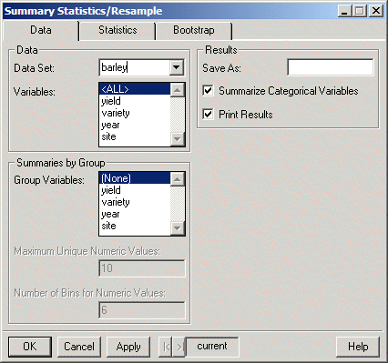
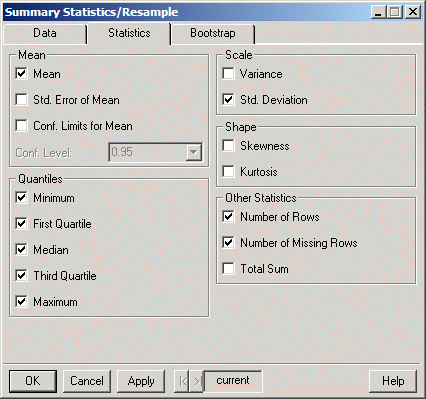
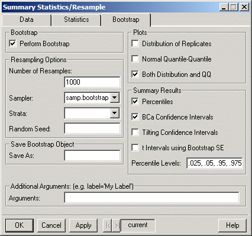

Data Summaries Summary Statistics/Resample. The dialog shown below appears.
Data Summaries Summary Statistics/Resample. The dialog shown below appears. S+Resample GUI Reference
|
Summary Statistics
The Summary Statistics dialog provides basic univariate summaries for continuous variables and counts for categorical variables. Summaries may be calculated within groups based on one or more grouping variables.
The statistics may be bootstrapped in order to estimate standard errors and obtain confidence intervals.
To generate summary statistics
Choose Statistics Data Summaries Summary Statistics/Resample. The dialog shown below appears.
Data page
 Click individual fields in the dialog below for more specific information.
Click individual fields in the dialog below for more specific information.

Statistics page
Click individual fields in the dialog below for more specific information.

Bootstrap page
Click individual fields in the dialog below for more specific information.

Related S-Plus language functions:
min, median, mean, summary, var, max, print.table
Resampling functions:
bootstrap, bootstrap2, plot.resamp, qqnorm.resamp, summary.resamp, limits.percentile, limits.bca, limits.tilt, limits.t.